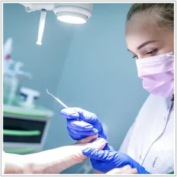
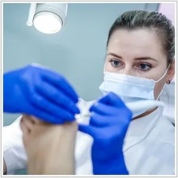
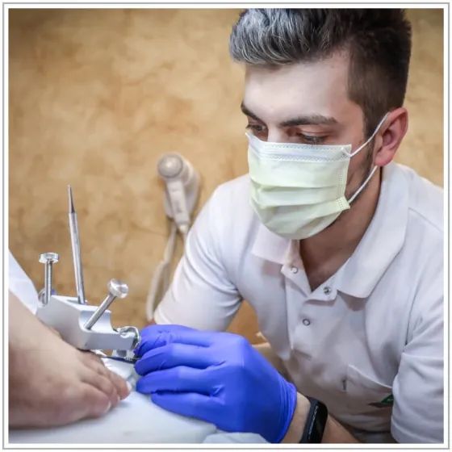
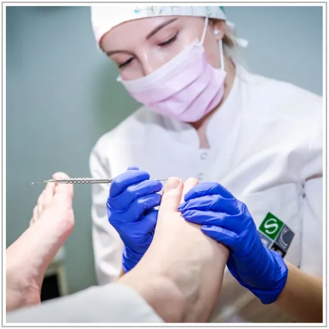

Zdrowe stopy, na których opiera się cały ruch
Pielęgnujemy, diagnozujemy i leczymy problemy stóp: od wrastających paznokci, przez zmiany skórne, po stopę cukrzycową. Najpierw szukamy przyczyny, potem dobieramy terapię.
Z czym możesz do nas przyjść
Nasze podejście
Stopy to część ciała, na której opiera się cały aparat ruchu, dlatego problem ze stopą często ma przyczynę lub skutek gdzie indziej. Każdy nasz gabinet podologiczny ma wyposażenie do kompleksowego zajmowania się problemami stóp, a nasi specjaliści stale poszerzają kompetencje na szkoleniach.
W złożonych przypadkach do zespołu podologicznego dołączają inni specjaliści: fizjoterapeuta, chirurg, dermatolog lub diabetolog. Dzięki temu możemy rozwiązać także trudne, nawracające problemy.




Zakres usług
Diagnostyka i konsultacja podologiczna
Ustalamy przyczynę dolegliwości. W razie potrzeby wykonujemy badania mykologiczne, czyli sprawdzamy, czy problem nie ma podłoża grzybiczego.
Pielęgnacja stóp i pedicure medyczny
Usuwamy odciski, modzele i hiperkeratozy, pielęgnujemy pękające pięty i likwidujemy zrogowacenia. Przy okazji analizujemy, czy źródłem dolegliwości nie są przeciążenia stopy, bo brak reakcji może prowadzić do nawrotów, a nawet problemów całego aparatu ruchu.
Korekcja wrastających paznokci
Wrastanie paznokci wynika z niewłaściwej pielęgnacji, genetyki lub źle dobranego obuwia i może dotyczyć każdego palca, najczęściej palucha. Stosujemy pełen katalog metod: metodę Arkady (pracują u nas instruktorzy tej metody), klamry ortonyksyjne i tamponady.
W złożonych przypadkach zespół z lekarzem chirurgiem wykonuje zabiegi plastyki wałów okołopaznokciowych.
Leczenie zmian skórnych
Zmiany skórne mogą mieć podłoże chorobowe, dlatego standardem jest diagnostyka laboratoryjna i dermatoskopia. Leczymy brodawki wirusowe (farmakologicznie i elektrokoagulacją), grzybice oraz zakażenia bakteryjne.
Pielęgnacja stopy cukrzycowej
Zespół stopy cukrzycowej to jedno z najgroźniejszych powikłań cukrzycy, a zaniedbania mogą prowadzić nawet do amputacji. Oceniamy ryzyko powikłań, między innymi badaniem czucia i pomiarem wskaźnika kostka-ramię, i prowadzimy regularną pielęgnację.
Mobilny podolog
Dla pacjentów leżących i mających problem z poruszaniem się przyjeżdżamy do domu na terenie Szczecina. Podolog na wizycie domowej wykonuje te same zabiegi co w gabinecie:
- obcięcie paznokci, także grzybiczych i pourazowych,
- usunięcie odcisków i modzeli, opracowanie popękanych pięt,
- pedicure medyczny i aplikację klamry na wrastające paznokcie,
- pobranie materiału do badania mykologicznego lub bakteryjnego,
- wykonanie ortez indywidualnych i odciążeń.
Specjaliści

Umów wizytę u podologa
Wybierz placówkę i wolny termin. Wizytę domową w Szczecinie umówisz pod numerem 609 442 071.